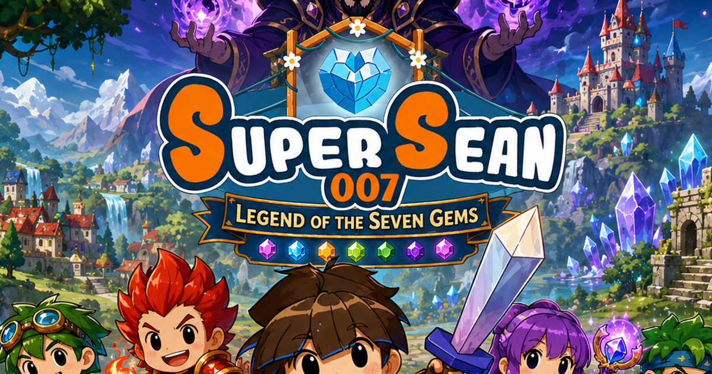
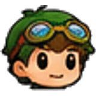
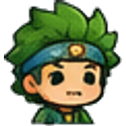
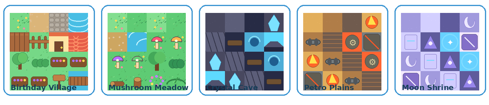

Super Sean
Crystal sword hero with courage skills, guardian blocks and friendship bursts. Sean is brave, funny and always one step from either saving the day or touching the suspicious glowing button.
Free HTML5 2D browser JRPG
Quest through cozy villages, enchanted forests, crystal caves and moonlit ruins with Super Sean, Dave, Petroman, Haraku and Ruush. Collect treasures, level up, unlock friendship powers and stop Xelar the Bald Wizard from conquering the known universe.

Playable vertical slice
The embedded HTML5 game includes exploration, NPC dialogue, quests, chests, local save/load, simple turn-based battles, XP, coins, items, unlockable paths and optional bonus rewards.
Story and lore
On the morning of Sean’s seventh birthday, Birthday Village glows with lanterns, cakes and crystal music. The village crystal, a relic older than any map, begins to pulse when Sean receives the Crystal Sword. For one perfect moment, every bell in the valley rings by itself.
Then the sky turns silver. Xelar the Bald Wizard descends through a moon-shaped rift, steals the first Gem fragment and curses the crystal. Haraku senses the location of the Moon Shrine and is marked by Xelar’s shadow. Sean, Dave, Petroman and Ruush must gather the Seven Gems before the Bald Moon Tower awakens.
The story balances cozy moments with epic stakes: villagers need help, friends argue and grow, Xelar’s ridiculous speeches hide real danger, and every restored Gem brings color, music and hope back to the world.
Playable heroes and villain
The sprite style uses the uploaded kawaii Super Sean sheet as the foundation, then packages each hero into game-ready strips and portraits.
Crystal sword hero with courage skills, guardian blocks and friendship bursts. Sean is brave, funny and always one step from either saving the day or touching the suspicious glowing button.

Gadget strategist, trap expert and practical best friend. Dave reveals hidden treasure, weakens enemies and keeps the adventure running with snacks and sarcasm.
Fire-powered tank from Petro Plains. Petroman smashes barriers, absorbs damage and solves many ancient puzzles by asking, “Can I punch it?”
Mystic healer and Moon Shrine guide. Haraku cleanses curses, reads ancient scripts and brings calm wisdom when the party is surrounded by chaos.

Wind-fast rogue and treasure chaser. Ruush dashes across gaps, finds rare drops and turns every forest path into a race.
The evil bald wizard, cosmic show-off and architect of the Bald Moon Tower. Xelar wants to drain the Seven Gems and crown himself emperor of every known star.
The world of Asteria-007
The world is designed as a hub-and-region JRPG, so new areas, bosses, monsters, treasures and story chapters can be added after launch.

The cozy home hub with shops, inn, quest board, reward chest, village crystal, fishing pond and Sean’s future room decoration system.
A gentle forest of mischievous mushrooms, slime sprouts, hidden chests and the first boss, Moldor the Mushroom Grump.
A glowing cavern of light puzzles, crystal creatures and ancient guardian echoes tied to the first Gem civilization.
Petroman’s machine-strewn homeland of fire vents, old engines, oil blobs and soot-armored enemies.
A wind forest with speed routes, sky bridges, racing shrines and feather rogues who challenge Ruush’s pride.
A sacred moonlit temple of spirit lanterns, mirror puzzles and curse magic where Haraku’s deeper story begins.
The collapsed capital of the Gem Guardians, filled with murals, relic doors, old portals and hidden lore trials.
Xelar’s final fortress, powered by stolen Gem light and designed to project grey magic across the universe.
Fictional world history
Long before Birthday Village had a name, Asteria-007 was a wandering star-garden drifting between seven cosmic rivers. The first magical creatures were the Gemkin: tiny crystal spirits who sang color into stone, water, trees and dreams. Where they sang longest, forests learned to glow, caves grew blue crystals, and moonflowers opened even during the day.
The Gemkin eventually met the Hearthfolk, small village-builders who loved festivals, recipes and impossible bridges. Together they formed the First Circle and forged the Seven Gems to keep the world balanced. Each Gem held a virtue, not as an abstract idea, but as real energy. Courage could turn fear into light. Friendship could link hearts across distance. Wonder could open doors no map could show. Wisdom could translate the language of ruins. Laughter could break curses. Hope could restore broken lands. Balance could keep all powers from consuming one another.
The age of heroes began when the Star Beasts arrived: cloud lions, moon deer, mushroom dragons, lantern fish and sleepy stone turtles large enough to carry villages on their backs. Most became allies. Some became guardians. A few became monsters after touching raw shadow between the stars.
Xelar was once a student of the Moon Library, a brilliant wizard who could fold space into mirrors. But he became obsessed with being remembered as the greatest sorcerer in history. When the library elders told him magic served life rather than vanity, he shaved his head in dramatic protest, declared baldness the perfect shape of destiny and vanished into the Dark Orbit.
Centuries later, Xelar returned with the Bald Moon Tower, a machine that could drain virtue from the Gems and convert it into obedience. His first conquest failed when the Gem Guardians sealed the tower beyond the clouds, but the seal weakened over generations. Now Xelar has found a crack in the sky, and only Super Sean’s awakened Crystal Sword can restore the ancient promise.
The known universe around Asteria-007 includes the Frosted Cake Kingdom, the Fire Engine City, the Sky Islands of Ruush, the Spirit Realm of Haraku, the Clockwork Asteroids and the Grey Comet where Xelar trains his bald wizard apprentices. Each future expansion can open one of these places as a new chapter in the same world history.
Quests and progression
The current playable slice starts with Birthday Village and Mushroom Meadow, but the structure supports a larger quest database with main quests, side quests, loyalty quests, daily tasks, boss hunts and treasure map stories.
Game systems
Top-down movement, interactive NPCs, chests, portals, region unlocks and local map state.
Fast command battles with Attack, Crystal Slash, Guard, items, Friendship Burst and escape options.
XP, level-ups, HP/MP growth, attack/defense growth and future skill tree hooks.
Coins, Berry Juice, Crystal Candy, Moon Tea, Guardian Shards and collectible future decorations.
Build friendship by guarding, casting skills and defeating bosses, then unleash combo power.
The adventure is completely free. Ads sit around natural breaks, and optional reward chests and battle revives give bonus perks.
Generated audio and sliced art
The build now generates original WAV music loops and SFX, writes `data/audio-manifest.json`, slices the game-critical character strips, enemies, tilesets, UI, items and VFX into `assets/sliced/`, and writes `data/sliced-assets.json` for future animation tooling.
The current game uses the slice metadata for character frame and tile coordinates while drawing from the source sheets for performance. Future quests can load individual sliced PNGs when a system needs isolated frames, icons, items or effects.
Expanded production asset library
The ZIP now includes the complete generated asset library: playable sprites, NPCs, enemies, bosses, terrain tiles, buildings, UI/HUD, VFX, key art, loading screens, event screens, world maps and JRPG battle scenery. The game canvas uses the new key art and battle backgrounds, while the site exposes the full asset manifest for AI build tools.
SEO and GAIO foundation
The package includes semantic HTML, rich internal sections, Open Graph metadata, Twitter cards, structured data for VideoGame/WebApplication/FAQ, robots.txt, sitemap.xml, manifest icons, llms.txt and an AI summary JSON file.
FAQ
This package is a full SEO/GAIO website plus a playable HTML5 JRPG foundation/vertical slice. It is built to expand into the complete game with additional maps, quests, assets, bosses and systems.
Yes. The game is a static HTML5 Canvas app and saves progress locally in the browser with localStorage.
Yes. Super Sean 007 is completely free to play in your browser. The site is supported by non-intrusive ads placed around natural breaks in the page and game flow.
Yes. The code is modular enough for AI build tools to add maps, items, quests, enemies, dialogue and mechanics. The ZIP includes metadata JSON files and build notes.
The project includes procedurally generated WAV music loops for the title screen, village exploration, battles and victory, plus SFX for UI, menus, slashes, hits, chests, rewards, level-ups and portals.
Yes. The build generates sliced character frames, region tiles, enemies, HUD parts, pickups and VFX metadata from the included source sheets while preserving the full original asset library.
Privacy, cookies and ads
Super Sean 007 is a free browser game supported by advertising. This site shows ads served by the Adsterra network across banner, native and social bar placements, and offers optional rewarded ad hooks inside the game.
Ad partners may use cookies or similar technologies to measure and serve ads. By playing, you agree to the display of these ads. Game progress is saved only in your own browser via localStorage and is never uploaded.